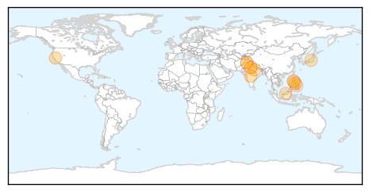

Dengue Fever
30-Day Web Trend
19 alerts, 8 warnings

30-Day Twitter Trend
0 alerts, 0 warnings

Article Locations
Article Confidences

Top Articles:
- 0.987
- 2 more dengue cases, another of swine flu
- 0.982
- Health in India: Concerns growing over spread of dengue fever
- 0.980
- Dengue alert could have helped save lives: experts
- 0.965
- El Niño heat sets off waves of dengue fever
- 0.964
- Mosquitoes capable of carrying dengue, yellow fevers found in Riverside County
- 0.876
- DOH: Dengue cases to rise due to El Niño
- 0.846
- Gurgaon hospitals face music after over-charging for dengue test
- 0.845
- Gurgaon hospitals face music after over-charging for dengue test
- 0.822
- Intensive approach towards malaria, dengue in Udupi
- 0.811
- Link between dengue, high temps of strong El Ninos
- 0.800
- Authorities asked to expedite anti-dengue campaign
- 0.766
- On the rise: Rawalpindi records 36 new dengue cases
- 0.704
- Metro Cebu, The Freeman Sections, The Freeman
- 0.639
- DOH to set up 3,200 health stations to address dengue cases
- 0.606
- Expected drought needs coordinated response
- 0.536
- Keeping dengue at bay: Industry gets shot in the arm
Top Tweets:
-
No tweets found for Oct 07, 2015
Swine Flu
30-Day Web Trend
2 alerts, 0 warnings

30-Day Twitter Trend
0 alerts, 0 warnings

Article Locations

Article Confidences

Top Articles:
- 0.999
- After dengue, swine flu likely to hit Delhi, govt preps up
- 0.993
- This week in wellness: Preventing the flu
- 0.989
- A nip in the air, so guard against swine flu
- 0.986
- 10 swine flu cases reported in Rajasthan
- 0.984
- Swine flu case found positive in City, Health Department on alert
- 0.982
- 10 swine flu cases reported in Rajasthan
- 0.963
- Have asked govt. hospitals to be prepared to fight swine flu, says Satyendra Jain
- 0.942
- Delhi Health Minister holds meeting to review Swine Flu preparedness
- 0.893
- Scientists call for urgent trials to judge flu drugs for pandemics
Top Tweets:
- 0.628
- Hey, @DavidNather the study shows pretty good flu shot protection against H1N1 & flu B. Not perfect is better than nothing!